Zu einer regulären Matrix  gibt es immer eine inverse Matrix 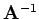, d.h., die Multiplikation einer Matrix mit ihrer inversen Matrix ergibt immer die Einheitsmatrix:
gibt es immer eine inverse Matrix 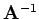, d.h., die Multiplikation einer Matrix mit ihrer inversen Matrix ergibt immer die Einheitsmatrix:
| 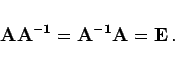 | (4.27a) |
Die Elemente von 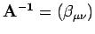 sind
| 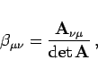 | (4.27b) |
wobei 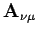 die zum Element 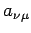 der Matrix  gehörende Adjunkte ist. Die praktische Berechnung von 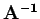 sollte mit Hilfe von Adjunkten erfolgen. Im Falle einer quadratischen Matrix vom Typ (2,2) gilt:
gehörende Adjunkte ist. Die praktische Berechnung von 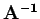 sollte mit Hilfe von Adjunkten erfolgen. Im Falle einer quadratischen Matrix vom Typ (2,2) gilt:
| 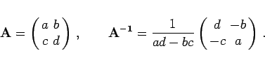 | (4.28) |
Warum in der Matrizenrechnung keine Division von Matrizen eingeführt wurde, sondern mit inversen Matrizen gerechnet wird, hängt damit zusammen, daß die Division nicht eindeutig erklärbar ist. Die Lösungen der Gleichungen
| 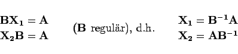 | (4.29) |
sind im allgemeinen verschieden.